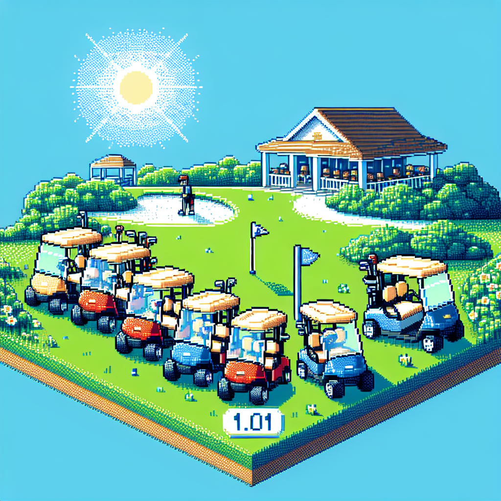

Golf Cars 1.01
Don: Hey Peter, let's talk about what people need to know about golf cars!
Peter: Absolutely, Don. Golf cars are such a fun way to get around, whether you're on the course or at the cottage.
Don: They're not just for golfing anymore. People use them for all sorts of recreational activities.
Peter: That's right. They're perfect for exploring the great outdoors and enjoying some quality time with friends and family.
Don: And with the advancements in technology, golf cars are more efficient and environmentally friendly than ever before.
Peter: Plus, they're easy to maintain and operate, making them a hassle-free choice for those who want to enjoy the convenience of getting around easily.
Don: So, whether you're hitting the links or cruising around your cottage property, a golf car can add a whole new level of fun and convenience to your outdoor adventures.
Peter: Absolutely, Don. Let's spread the word about the joys of golf cars and help more people experience the thrill of driving around in style!